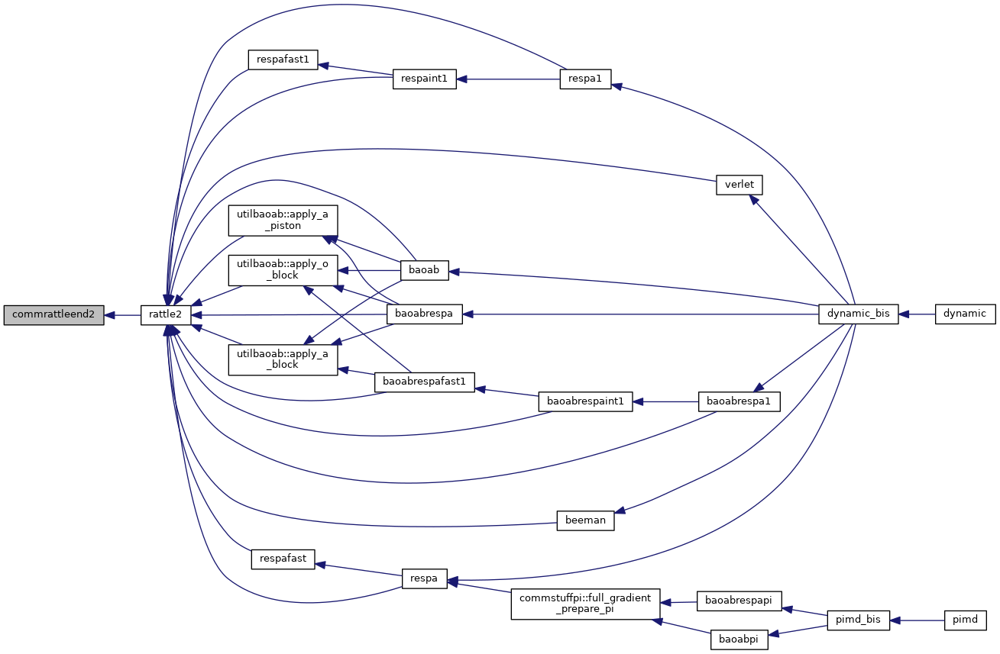
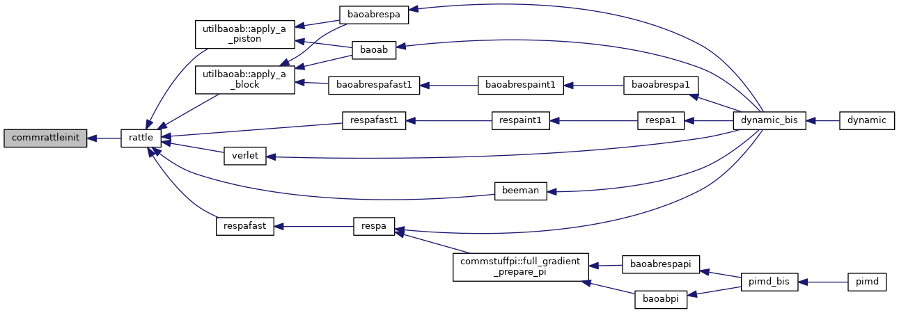
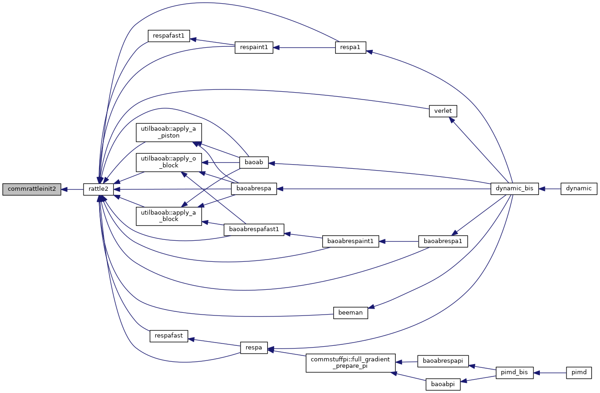
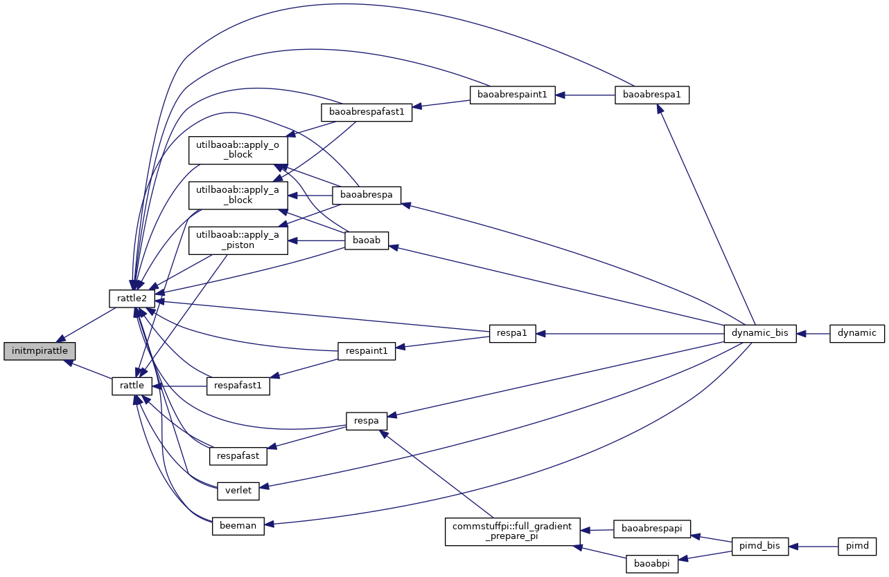
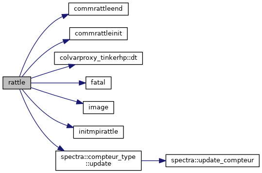
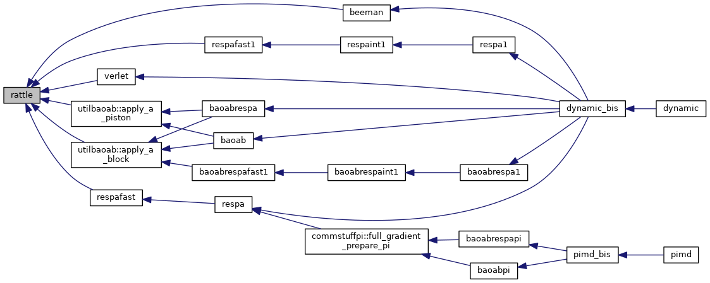
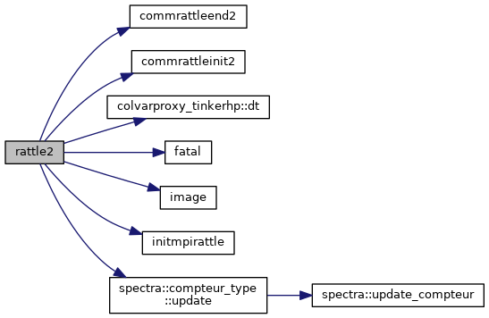
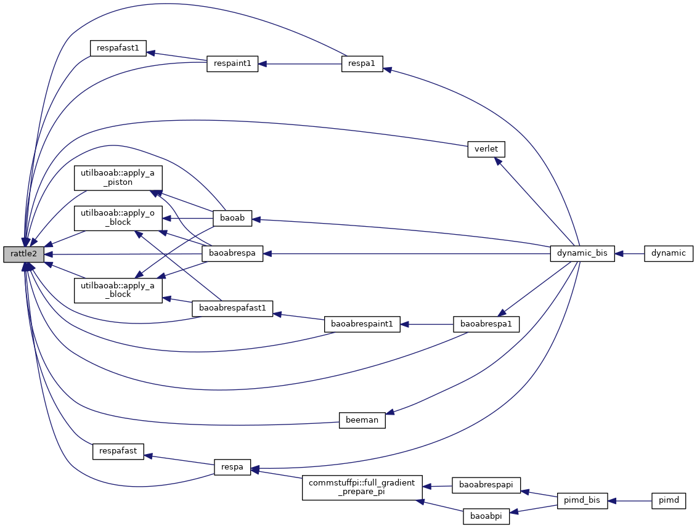
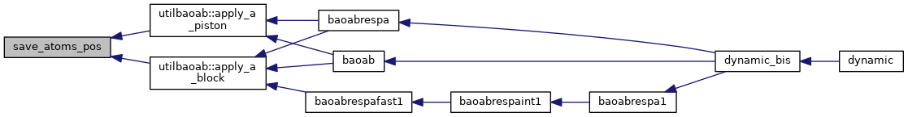

|
Tinker-HP v1.3
|
|
Tinker-HP v1.3
|
Go to the source code of this file.
Functions/Subroutines | |
| subroutine | rattle (dt) |
| implements the first portion of the RATTLE algorithm by correcting atomic positions and half-step velocities to maintain interatomic distance and absolute spatial constraints More... | |
| subroutine | rattle2 (dt) |
| implements the second portion of the RATTLE algorithm by correcting the full-step velocities in order to maintain interatomic distance constraints More... | |
| subroutine | initmpirattle |
| build the arrays to communicate positions of atoms during the calculation of the constrains using the rattle algorithm More... | |
| subroutine | commrattleinit |
| deal with necessary comms before rattle iterations computes and displays the total potential energy More... | |
| subroutine | commrattleend |
| deal with necessary comms after rattle iterations More... | |
| subroutine | save_atoms_pos |
| store current atomic positions in *old arrays More... | |
| subroutine | commrattleinit2 |
| deal with necessary comms before rattle2 iterations More... | |
| subroutine | commrattleend2 |
| deal with necessary comms after rattle2 iterations More... | |
| subroutine commrattleend | ( | ) |
deal with necessary comms after rattle iterations
| no | params |
Definition at line 663 of file rattle.f90.
Referenced by rattle().
| subroutine commrattleend2 | ( | ) |
deal with necessary comms after rattle2 iterations
| no | params |
Definition at line 887 of file rattle.f90.
Referenced by rattle2().

| subroutine commrattleinit | ( | ) |
deal with necessary comms before rattle iterations computes and displays the total potential energy
| no | params |
Definition at line 551 of file rattle.f90.
Referenced by rattle().

| subroutine commrattleinit2 | ( | ) |
deal with necessary comms before rattle2 iterations
| no | params |
Definition at line 792 of file rattle.f90.
Referenced by rattle2().

| subroutine initmpirattle | ( | ) |
build the arrays to communicate positions of atoms during the calculation of the constrains using the rattle algorithm
| no | params |
Definition at line 383 of file rattle.f90.
Referenced by rattle(), and rattle2().

| subroutine rattle | ( | real*8 | dt | ) |
implements the first portion of the RATTLE algorithm by correcting atomic positions and half-step velocities to maintain interatomic distance and absolute spatial constraints
| [in] | dt,: | timestep |
Definition at line 31 of file rattle.f90.
References commrattleend(), commrattleinit(), colvarproxy_tinkerhp::dt(), fatal(), image(), initmpirattle(), and spectra::compteur_type::update().
Referenced by utilbaoab::apply_a_block(), utilbaoab::apply_a_piston(), beeman(), respafast(), respafast1(), and verlet().


| subroutine rattle2 | ( | real*8 | dt | ) |
implements the second portion of the RATTLE algorithm by correcting the full-step velocities in order to maintain interatomic distance constraints
| [in] | dt,: | timestep |
Definition at line 202 of file rattle.f90.
References commrattleend2(), commrattleinit2(), colvarproxy_tinkerhp::dt(), fatal(), image(), initmpirattle(), and spectra::compteur_type::update().
Referenced by utilbaoab::apply_a_block(), utilbaoab::apply_a_piston(), utilbaoab::apply_o_block(), baoab(), baoabrespa(), baoabrespa1(), baoabrespafast1(), baoabrespaint1(), beeman(), respa(), respa1(), respafast(), respafast1(), respaint1(), and verlet().


| subroutine save_atoms_pos | ( | ) |
store current atomic positions in *old arrays
| no | params |
Definition at line 774 of file rattle.f90.
Referenced by utilbaoab::apply_a_block(), and utilbaoab::apply_a_piston().

 1.8.5
1.8.5